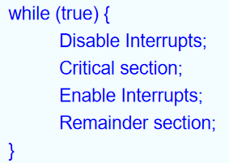

Process Synchronization
约 4986 个字 113 行代码 30 张图片 预计阅读时间 35 分钟
background
存在的问题：对共享数据的并发访问可能会导致数据的不一致性
解决方式：维护数据一致性需要确保协作过程有序执行的机制
进程同步：进程同步（Process Synchronization）是指在多进程或多线程环境中，为了确保多个进程或线程能够按照一定的顺序或条件正确地访问共享资源而采取的各种协调机制。
Consumer-producer problem
- Employing an integer count to keep track of the number of full buffers.
- Initially, count is set to 0.
- It is incremented by the producer after it produces a new buffer .
- It is decremented by the consumer after it consumes a buffer.
- Producer and consumer perform concurrently.
存在的一些问题，count++ 以及 count– 步骤可能会出现错误，在这两个步骤中，首先都会将内存中的值加载到寄存器中，在寄存器中进行加减后再将数据写回到寄存器。
- Consider this execution with “count = 5” initially:
- S0: producer execute register1 = count {register1 = 5}
- S1: producer execute register1 = register1 + 1 {register1 = 6}
- S2: producer execute count = register1 {count = 6}
- S3: consumer execute register2 = count {register2 = 6}
- S4: consumer execute register2 = register2 - 1 {register2 = 5}
- S5: consumer execute count = register2 {count = 5 }
一旦执行的顺序被打乱，那么就可能导致出错的情况。（调度导致的交错执行）
- Consider this execution interleaving with “count = 5” initially:
- S0: producer execute register1 = count {register1 = 5}
- S1: producer execute register1 = register1 + 1 {register1 = 6}
- S2: consumer execute register2 = count {register2 = 5}
- S3: consumer execute register2 = register2 - 1 {register2 = 4}
- S4: producer execute count = register1 {count = 6 }
- S5: consumer execute count = register2 {count = 4}
Race condition
Race condition (竞态条件): A race condition is a situation in which a memory location is accessed concurrently, and at least one access is a write.
 对于访问共享的内核数据(shared kernel data)，非抢占的内核是否受竞态条件(race conditions)的影响？
对于访问共享的内核数据(shared kernel data)，非抢占的内核是否受竞态条件(race conditions)的影响？
- Answer: 依然可能产生，比如多核进程以及统一写入的进程。
The Critical-Section Problem
临界区问题
目的
- To design a protocol that the processes can use to cooperate
Entry section 用于判断能否进入临界区执行，里面的进程可能处于 running（正在判断）, ready（判断完但进不去临界区）, waiting（正在等待别的进程释放需要的资源）
Critical section 是临界区
- 对于Critical section 中的内容，当其中的各个部分具有关联时，则不能拆开，否则可以拆开。并且在可以拆开的情况下，拆开比较好，这样可以让更多的进程并发执行。
Exit section 用于释放临界区资源
Remainder section 是剩余的程序
临界区是指进程中用于访问临界资源的那段代码
概念
临界资源：临界资源指的是在多线程或多进程环境中被多个线程或进程共享的资源。这些资源需要通过适当的同步机制来保护，以确保同一时刻只有一个线程或进程可以访问这些资源。
临界区：临界区指的是程序中一个访问共用资源的程序片段。每个进程中访问临界资源的那段代码称为临界区。
注意：CPU 不是临界资源，因为如果只有 CPU 是共享的，并不会导致数据的冲突。
解决方法
- Mutual Exclusion (互斥) - If process \(P_i\) is executing in its critical section, then no other processes can be executing in their critical sections
- Progress (空闲让进) - If no process is executing in its critical section and there exist some processes that wish to enter their critical section, then the selection of the processes that will enter the critical section next cannot be postponed indefinitely 当临界区空闲并且有进程希望进入临界区时，必然会有一个进程能够成功进入临界区
- Bounded Waiting (有限等待) - A bound must exist on the number of times that other processes are allowed to enter their critical sections after a process has made a request to enter its critical section and before that request is granted 当一个进程发出进入临界区的请求之后，进入临界区之前的等待次数是有限的（当一个进程发出进入临界区的请求时，别的进程也可能发出了进入临界区的请求）
- Assume that each process executes at a nonzero speed 进程不会停止
- No assumption concerning relative speed of the N processes 等待的次数是有限的，但是单次等待的时间是没有限制的，也就是说等待的总时间是没有限制的
总结：空闲让进、忙则等待（互斥）、有限等待、让权等待（一直无法获得进入临界区的权限时，让出等待的位置让别的进程优先进入临界区，防止进程忙等待）
同步机制
软件方法
单标志法
设置公共整型变量turn，指示允许进入临界区的进程编号，turn = i，允许 \(P_i\) 进入临界区，进程退出临界区时交给另一个进程，turn = j
代码实现
条件满足
- Mutual Exclusion（互斥）？Yes
- Progress（空闲让进）？No，当一个进程 i 完成之后，turn 会变成 j，如果此时 j 一直不进入 critical section，那么 turn 一直保持在 j，i 无法再次进入 critical section
- Bounded Waiting（有限等待）？Yes，等待次数为1，但是等待的时间可能无限
特点
- 可实现两个进程轮替进入临界区
- 必须轮替进入，不满足空闲让进
双标志后检查法
介绍：设置布尔型数组flag[2]，用来标记各进程进入临界区的意愿，flag[i]=true表示进程 \(P_i\) 想进入
过程：先表达自己进入临界区意愿再轮询对方是否想进入，确定对方不想进入后再进入访问结束退出后设置flag[i]=false，表示不想进入，允许对方进入
代码实现
条件满足
- Mutual Exclusion（互斥）？Yes
- Progress（空闲让进）？No，当两个进程同时变为 true 时，就会陷入死循环，没有进程能够进入 critical section (“饥饿”现象)
- Bounded Waiting（有限等待）？Yes，等待次数为1，但是等待的时间可能无限
特点
- 可能导致双方都不能进入
- 违反空闲让进
双标志前检查法
介绍：设置布尔型数组flag[2]，用来标记各进程进入临界区的意愿，flag[i]=true表示进程 \(P_i\) 想进入
过程：进程进入临界区前先轮询对方是否想进入确定对方不想进入后再进入访问结束退出后设置flag[i]=false，表示不想进入，允许对方进入
代码实现
条件满足
- Mutual Exclusion（互斥）？No，同时想要进入，导致了两个进程同时进入 critical section
- Progress（空闲让进）？Yes
- Bounded Waiting（有限等待）？Yes，等待次数为1，等待时间可能无限
特点
- 不用交替进入
- 违反互斥
Peterson's Solution
将前面的法及方法进行结合，使用到了两个数据结构
Idea
结合单标志法和双标志后检查法，首先表达自身意愿(flag[]=true)之后设置自身要进入(turn=0/1)；若双方互相确定对方都想进入时，turn只能等于一个值，因此会谦让对方进入若一方不想进入，则其flag[i]=false，对方可直接进入
代码实现
条件满足
- Mutual Exclusion（互斥）？Yes
- Progress（空闲让进）？Yes
- Bounded Waiting（有限等待）？Yes，等待次数为1
存在问题
There are no guarantees that Peterson's solution works correctly on modern computer architectures.
原因：现在计算机在编译代码的时候会对代码进行优化，load 会在 store 之前操作，导致算法的错误。（也就是说可能会先执行判断语句再执行上面的赋值语句，导致互斥条件无法满足）
解决方式
Memory barrier (内存栅栏)

Bakery Algorithm (面包房算法)
Dijkstra's concurrent programming problem:
- 任何时间，最多只能有一个进程进入 critical section；
- 每个进程最终都会进入 critical section；
- 每个进程都能停在 noncritical section；
- 不能对进程的速度做任何假设。
Idea
类似于餐馆取号和叫号的方式。取号接着上一个号码，叫号从小号开始叫号。
- Before entering its critical section, process receives a number. Holder of the smallest number enters the critical section.
- If processes \(P_i\) and \(P_j\) receive the same number, if i < j, then \(P_i\) is served first; else \(P_j\) is served first.
- The numbering scheme always generates numbers in increasing order of enumeration; e.g., 1, 2, 3, 3, 3, 3, 4, 5.
变量
- boolean choosing[n]: 表示进程是否在取号；初始false。
- int number[n]: 记录每个进程取到的号码；初始0。
比较方式
- （a，b）＜（c，d）: (1) a＜c, or (2) a==c且b＜d
代码实现
条件满足
- Mutual Exclusion（互斥）？Yes
- Progress（空闲让进）？Yes
- Bounded Waiting（有限等待）？Yes，等待次数为 n - 1
硬件实现
Synchronization Hardware
方法分类
- disable interrupts (关闭中断法)：通过关闭临界资源来屏蔽进程的访问
- 通过硬件设备的原子操作实现
- TestAndSet Instruction
- Swap Instruction
- Mutex Locks
Disable interrupts
关中断法，也叫中断屏蔽法
Idea
- 进入临界区前直接屏蔽中断(因为CPU只在中断时引起进程切换)，保证临界区资源顺利使用
- 使用完毕，打开中断

缺点
- 可能影响系统效率：滥用关中断会严重影响CPU执行效率，其锁住CPU可能导致原本一些短时间即可完成的需要等待开中断
- 不适用于多CPU系统：中断屏蔽法只适用于单CPU系统，在多CPU系统中无法有效同步各个CPU的操作。
- 安全性问题：滥用关中断权力可能导致严重后果，例如在关闭中断期间，一些重要的中断请求可能被错过，影响系统的稳定性和可靠性。而且一旦将关中断的权限交给用户，若一个进程关中断后不再开中断，则系统可能会因此终止。
存在问题
不能保证操作的原子性
- Atomic = non-interruptable
- Either test memory word and set value
- Or swap contents of two memory words
TestAndSet Instruction
Test and modify the content of a word atomically.
Shared boolean variable lock., initialized to false.
伪代码
代码实现

条件满足
- Mutual Exclusion（互斥）？Yes
- Progress（空闲让进）？Yes
- Bounded Waiting（有限等待）？No，运气不好可能会一直不能进入临界区
Swap Instruction
伪代码
实现思路
- 对每个临界资源，swap设置一个全局bool变量lock(初值为false)，每个进程设置局部变量key(初值为true)
- 进程调用swap()指令访问临界区，会交换key和lock的值，实现上锁，进入访问
- 退出时把lock重置为false
代码实现
Shared Boolean variable lock initialized to FALSE; Each process has a local Boolean variable key.
条件满足
- Mutual Exclusion（互斥）？Yes
- Progress（空闲让进）？Yes
- Bounded Waiting（有限等待）？No，运气不好可能会一直不能进入临界区
由于 TS 指令和 Swap 指令都是由硬件逻辑实现的，所以它们不会被中断
拓展
The compare_and_swap (CAS) Instruction
定义
属性
- Executed atomically
- Returns the original value of passed parameter value
- Set the variable value the value of the passed parameter new_value but only if *value == expected is true. That is, the swap takes place only under this condition.
代码实现
条件满足
- Mutual Exclusion（互斥）？Yes
- Progress（空闲让进）？Yes
- Bounded Waiting（有限等待）？No，运气不好可能会一直不能进入临界区
基于原子操作的共性问题
都满足不了有限等待 (Bounded Waiting)
解决方案
基于排队等待的方法
当进程 i 执行完成之后，会判断还有没有没有等待进入临界区的进程。如果还有，就将那个进程的 waiting 设置为0，也就是让那个进程进入临界区。如果没有等待进入临界区的进程，那么就释放锁并且退出函数。
Mutex Locks
- 通过使用互斥锁来实现对数据的原子操作
- Protect a critical section by
- First acquire() a lock
- Then release() the lock
- Calls to acquire() and release() must be atomic
- Usually implemented via hardware atomic instructions such as compare-and-swap.
- But this solution requires busy waiting（不停空循环）
- This lock therefore called a spinlock （自旋锁）
- Protect a critical section by
代码实现
存在的问题
busy waiting (不停空循环，也就是不停执行 acquire()函数)会导致CPU资源浪费，效率低下
以前被称为 spinlock (自旋锁)
硬件实现方法总结
- 优点
- 适用于任意数目的进程，在单处理器或多处理器上
- 简单，容易验证其正确性
- 可以支持进程内存在多个临界区，只需为每个临界区设立一个布尔变量
- 缺点
- 耗费CPU时间，不能实现“让权等待”
- 可能不满足有限等待：从等待进程中随机选择一个进入临界区，有的进程可能一直选不上
- 可能死锁
信号量机制
SemaphoresClassic Problems of Synchronization
- wait() and signal() 以前称为 P() and V() (荷兰语)
- wait() 和 signal() 具体操作
PV操作是计算机中的两个原语操作，原语操作是指完成某种功能且不被分割、不被中断执行的操作序列
信号量类型
- Counting semaphore (计数型) – integer value can range over an unrestricted domain
- Binary semaphore (二进制型) – integer value can range only between 0 and 1; can be simpler to implement (可以认为是计数型的一种特殊形式，计数型有多少种状态，就使用多少个二进制数)
- Also known ad mutex locks
- Can implement a counting semaphore S as a binary semaphore
- AND型信号量
- 信号量集
信号量的使用
互斥
S的初始值应该是多少？
应该是 1，表示此时没有进程正在使用临界区资源，否则没有进程能够进入临界区
同步
- P1 has a statement S1, P2 has S2
- Statement S1 to be executed before S2
S的初始值应该是多少？
应该是 0，这样只有当 S1 执行后，S2 才会执行。
实例
- 四个房间，相同的key，需要几个信号量？
答案
1，对应生产者消费者模型，四个钥匙相同的房间代表着相同的可以支持四个进程同时访问的临界区资源，此时初始化一个信号量为4，当每个进程进来请求访问临界区资源时，如果信号量大于0，则信号量减去1并且访问临界区资源，否则不能访问临界区资源。当进程成功使用临界区资源之后，信号量加1。
- 四个房间，每个房间各自的key，需要几个信号量？
答案
4，对应的还是生产者消费者模型，与上一个问题的区别是此时的四个房间对应的钥匙是不同的，可以理解为此时有四份临界区资源，并且每一份资源同时只能让一个进程访问。此时四个信号量初始化为1，接下俩的过程和上一个问题相同。
如果只用一个信号量，会导致多个房间之间的访问冲突，无法保证互斥性
信号量的实现
- 确保 wait() 和 signal() 操作不能同时对一个信号量进行操作
- 此时信号量是临界资源问题
- 可能会导致 busy waiting 问题
忙等待
实例

非忙等待
- With each semaphore there is an associated waiting queue. Each semaphore has two data items:
- value (of type integer)
- pointer to a linked-list of PCBs.
- Two operations (provided as basic system calls):
- block (sleep) – place the process invoking the operation on the appropriate waiting queue.
- wakeup – remove one of processes in the waiting queue and place it in the ready queue.
非忙等与忙等的区别
S 可以取负值，表示队列里面正在排队的进程个数
实例
在P中，为什么要使用while()而非if()?
这与block()和wakeup()内部的实现有关。
首先要明确，block()函数内部存储了该进程的PCB，即当前的PC、状态等；
在发现资源被占用后，这个进程会直接被挂起（放入等待队列），挂起的含义就是将这个进程卡死在P状态中。
在wakeup()函数中，会遍历等待队列，找到第一个满足条件的进程，将其唤醒，唤醒的含义就是将这个进程从挂起状态中唤醒，让它重新进入P状态。此时，需要重新判定s是否有资源可用，如果有，则跳出while循环，否则重新将该进程插入挂起队列中。
（但其实事实上，if也可以做且逻辑没有问题，但不够安全）
lost wakeup 问题
当wakeup()在212行与213行之间执行时，会导致wakeup的丢失。
解决方式
将上锁操作挪到while(s->count == 0)上方，这样可以防止wakeup的丢失。
新的问题
进程1首先执行一轮P()，此时进程2也进入了P()并且已经获得了锁，此时进程1会因为获得不到锁而无法执行V()，进程2会因为 s->count == 0 而一直在循环中，总体进入一种死循环状态。
解决方式
s 在 sleep 的时候同时释放掉锁
当一个进程被唤醒之后，会重新从头开始执行，而不是接着进入 sleep 的位置接着执行
Busy waiting 和 No busy waiting 分析比较
- busy waiting: 当单个CPU时，无法使用busy waiting；且如果临界区执行时间较长，busy waiting会导致CPU效率降低。
- no busy waiting: 由于引入了进程链表，这意味着需要频繁使用进程调度，因此上下文切换的Overhead较大。当这个Overhead甚至大于临界区执行时间时，busy waiting的效率更高
死锁问题和饥饿问题
- Deadlock – two or more processes are waiting indefinitely for an event that can be caused by only one of the waiting processes
P0 和 P1 同时执行完第一步，然后互相等待陷入死锁
- Starvation – indefinite blocking. A process may never be removed from the semaphore queue in which it is suspended.
实际问题的解决
- 通常用信号量表示资源或临界区
-
信号量的物理含义
- S.value >0 表示有S.value个资源可用;
- S.value=0 表示无资源可用或表示不允许进程再进人临界区；
- S.value<0 则|S.value|表示在等待队列中进程的个数或表示等待进入临界区的进程个数。
-
wait、signal操作必须成对出现，有一个wait操作就一定有一个signal操作一般情况下:当为互斥操作时，它们同处于同一进程;当为同步操作时，则不在同一进程中出现。
- 如果两个wait操作相邻，那么它们的顺序至关重要，而两个相邻的signal操作的顺序无关紧要。一个同步wait操作与一个互斥wait操作在一起时，同步wait操作在互斥wait操作前，否则可能导致死锁问题。
Bounded-Buffer Problem
有界缓冲区问题(也是生产者消费者问题)：消费者判断有没有，生产者判断满没满
- N buffers, each can hold one item
How many semaphores?
- Semaphore mutex initialized to the value 1
- Semaphore full initialized to the value 0, counting full items
- Semaphore empty initialized to the value N, counting empty items.
具体实现
- 生产者首先检查有没有空闲位置(empty)，然后等待锁，添加完成后释放锁并且对 full 信号量进行 +1 操作
- 消费者首先检查有没有东西在 buffer 中(full)，然后获得锁，取完成后释放锁并且对 empty 信号量进行 +1 操作
注意
在生产者消费者问题中，生产者一定要先执行wait(empty)，再执行wait(mutex)；消费者一定要先执行wait(full)，再执行wait(mutex)
如果顺序调换，那么在 buffer 是满的情况下，生产者首先获取了 mutex，并且正在等待 empty，也就是等待消费者取出 buffer 中的物品，但是由于此时的 mutex 被生产者占有，消费者无法获得 mutex 并且执行取物品操作，会导致此时陷入无休止的等待状态。
Readers and Writers Problem
读者写者问题：可以允许多个读者同时阅读数据集，但是同一时间只能有一个写者在写数据集。并且当读者在读取数据集时，写者不能对数据集进行写操作。同样的，写者写数据集的时候读者不能对数据集进行读取。
- A data set is shared among a number of concurrent processes
- Readers – only read the data set; they do not perform any updates
- Writers – can both read and write.
共享的变量
- Data set
- Semaphore mutex initialized to 1, to ensure mutual exclusion when readcount is updated.
- Semaphore wrt initialized to 1.
- Integer readcount initialized to 0.
写者进程
- 等待 wrt 信号量，为一时就可以进行写操作
读者进程
- 第一个读者需要等待 wrt 信号量，确保没有写者在写数据集的时候才可以读取，后面的读者就可以直接读，读者离开的方式也是一样的。
拓展：写进程优先
实现写进程优先的方式，待补充...
Dining-Philosophers Problem
哲学家就餐问题：五个哲学家围在桌前，可以选择思考或吃饭，每个哲学家左右两侧各有一根筷子，当他想吃饭时当且仅当拿到两根筷子(左边的筷子和右边的筷子)时才能吃饭
共享的变量
- Bowl of rice (data set)
- Semaphore chopstick [5] initialized to 1
实现方式
- 吃饭时先拿起左边的筷子，再拿起右边的筷子。吃完后先放下左边的筷子，再放下右边的筷子。
死锁问题
所有哲学家同时拿起自己左边的筷子
如何解决问题？
- 一个哲学家改变自己拿筷子的方式(先拿右边的)
- 最多允许四个人同时吃法
- 奇数ID和偶数ID设置相反拿筷子顺序
- 只有当哲学家左右两边都有筷子的时候，才允许哲学家抓起筷子(添加互斥锁)
什么情况下可以只设置一个信号量且不产生互斥冲突情况？
不限定拿筷子的方式，类似于将筷子放在一个筷子筒里面，可以直接拿筷子
Monitors
管程：定义了一个数据结构和能为并发进程所执行(在该数据结构上)的一组操作，这组操作能同步进程和改变管程中的数据。
- A high-level abstraction that provides a convenient and effective mechanism for process synchronization
- Only one process may be active within the monitor at a time
管程类似于面向对象程序设计中的类，将对共享资源的操作封装起来，管程内的共享数据结构只能被管程内的过程所访问，一个进程只有通过调用管程内的过程才能进入管程访问共享资源。
条件变量
- condition x, y;
- Two operations on a condition variable:
- x.wait () – a process that invokes the operation is suspended.
- x.signal () – resumes one of processes (if any) that invoked x.wait ()
使用 Monitor 解决哲学家问题
monitor DP
{
enum { THINKING, HUNGRY, EATING} state [5] ;
condition self [5]; //philosopher i can delay herself when unable to get chopsticks
void pickup (int i) {
state[i] = HUNGRY;
test(i);
if (state[i] != EATING) self [i].wait;
}
void putdown (int i) {
state[i] = THINKING; // test left and right neighbors
test((i + 4) % 5);
test((i + 1) % 5);
}
void test (int i) {
// 自己是 hungry 并且左右两侧的哲学家都不是 eating 状态
if ( (state[(i + 4) % 5] != EATING) &&
(state[i] == HUNGRY) &&
(state[(i + 1) % 5] != EATING) ) {
state[i] = EATING ;
self[i].signal() ;
}
}
void initialization_code() {
for (int i = 0; i < 5; i++)
state[i] = THINKING;
}
}
哲学家调用函数的方式
可能导致死锁问题：当一个哲学家等待用餐时，左侧和右侧的哲学家交替用餐，那么这个哲学家就一直无法用餐。
Synchronization Examples
- Solaris
- Windows XP
- Linux
- Pthreads
Pthreads
提供互斥锁和条件变量两种方式
互斥锁
void reader_function (void);
void writer_function (void);
char buffer;
int buffer_has_item = 0;
pthread_mutex_t mutex;
struct timespec delay;
void main (void) {
pthread_t reader;
delay.tv_sec = 2;
delay.tv_nec = 0;
pthread_mutex_init(&mutex,NULL);
pthread_create(&reader, pthread_attr_default, (void *)&reader_function, NULL);
writer_function();
}
void writer_function (void) {
while(1) {
pthread_mutex_lock(&mutex);
if (buffer_has_item == 0) {
buffer = make_new_item();
buffer_has_item = 1;
}
pthread_mutex_unlock(&mutex);
pthread_delay_np(&delay);
}
}
void reader_function(void) {
while(1) {
pthread_mutex_lock(&mutex);
if(buffer_has_item == 1) {
consume_item(buffer);
buffer_has_item = 0;
}
pthread_mutex_unlock(&mutex);
pthread_delay_np(&delay);
}
}
条件变量
pthread_mutex_t count_lock;
pthread_cond_t count_nonzero;
unsigned count;
decrement_count() {
pthread_mutex_lock(&count_lock);
while (count == 0)
pthread_cond_wait(&count_nonzero, &count_lock);
count = count - 1;
pthread_mutex_unlock(&count_lock);
}
increment_count() {
pthread_mutex_lock(&count_lock);
if (count == 0)
pthread_cond_signal(&count_nonzero);
count = count + 1;
pthread_mutex_unlock(&count_lock);
}
pthread_cond_wait(&count_nonzero, &count_lock) 中第二个参数用于释放锁，防止导致死锁问题
一些题目补充
一些王道上的题目
题目1
两个旅行社甲和乙为旅客到某航空公司订飞机票，形成互斥资源的是( )。
A. 旅行社
B. 航空公司
C. 飞机票
D. 旅行社与航空公司
答案与解析
C
一张飞机票不能售给不同的旅客，因此飞机票是互斥资源，其他因素只是为完成飞机票订票的中间过程，与互斥资源无关。
题目2
以下( )属于临界资源。
A. 磁盘存储介质
B. 公用队列
C. 私用数据
D. 可重入的程序代码
答案与解析
B
临界资源与共享资源的区别在于，在一段时间内能否允许被多个进程访问(并发使用)，显然磁盘属于共享设备。公用队列可供多个进程使用，但一次只可供一个进程使用，若多个进程同时使用公用队列，势必造成队列中的数据混乱而无法使用。私用数据仅供一个进程使用，不存在临界区问题，可重入的程序代码一次可供多个进程使用。
题目3
用 P,V 操作实现进程同步，信号量的初值为( )。
A. -1
B. 0
C. 1
D. 由用户确定
答案与解析
D
与互斥信号量初值一般置1不同，用P,V操作实现进程同步时，信号量的初值应根据具体情况来确定。若期望的消息尚未产生，则对应的初值应设为0;若期望的消息已存在，则信号量的初值应设为一个非0的正整数
题目4
对信号量 S 执行 P 操作后，使该进程进入资源等待队列的条件是( )。
A. S.value<0
B. S.value<=0
C. S.value>0
D. S.value>=0
答案与解析
A
① S.value>0, 表示某类可用资源的数量。每次P操作，意味着请求分配一个单位的资源。
② S.value≤0,表示某类资源已经没有，或者说还有因请求该资源而被阻塞的进程，S.value 的绝对值表示等待进程数目。
一定要看清题目中的陈述是执行P操作前还是执行P操作后。
题目5
若系统有n个进程，则就绪队列中进程的个数最多有(①)个；阻塞队列中进程的个数最多有(②)个。
① A. n+1 B. n C. n-1 D. 1
② A. n+1 B. n C. n-1 D. 1
答案与解析
①C ②B
① 系统中有n个进程，只要这些进程不都处于阻塞态，则至少有一个进程正在处理器上运行(处理器至少有一个),因此就绪队列中的进程个数最多有n-1个。
② 本题易错选C，阻塞队列有n-1个进程是可能发生的，但不是最多的情况。可能会忽略死锁的情况，死锁就是n个进程都被阻塞，因此阻塞队列最多可以有n个进程。
题目6
下列关于管程的叙述中，错误的是( )。
A. 管程只能用于实现进程的互斥
B. 管程是由编程语言支持的进程同步机制
C. 任何时候只能有一个进程在管程中执行
D. 管程中定义的变量只能被管程内的过程访问
答案与解析
A
管程是由一组数据及定义在这组数据之上的对这组数据的操作组成的软件模块，这组操作能初始化并改变管程中的数据和同步进程。管程不仅能实现进程间的互斥，而且能实现进程间的同步，因此A错误、B正确；管程具有如下特性：①局部于管程的数据只能被局部于管程内的过程所访问；②一个进程只有通过调用管程内的过程才能进入管程访问共享数据；③每次仅允许一个进程在管程内执行某个内部过程，因此C和D正确。